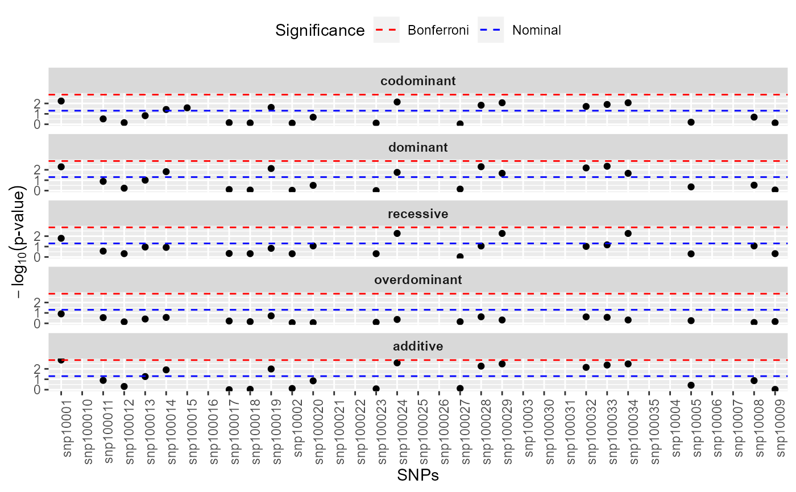

Whole genome association analysis
WGassociation.RdThis function carries out a whole genome association analysis between the SNPs and a dependent variable (phenotype) under five different genetic models (inheritance patterns): codominant, dominant, recessive, overdominant and log-additive. The phenotype may be quantitative or categorical. In the second case (e.g. case-control studies) this variable must be of class 'factor' with two levels.
Usage
WGassociation(formula, data, model = c("all"),
quantitative = is.quantitative(formula, data),
genotypingRate = 80, level = 0.95, ...)Arguments
- formula
either a symbolic description of the model to be fited (a formula object) without the SNP or the name of response variable in the case of fitting single models (e.g. unadjusted models). It might have either a continuous variable (quantitative traits) or a factor variable (case-control studies) as the response on the left of the
~operator and terms with additional covariates on the right of the~operator may be added to fit an adjusted model (e.g.,~var1+var2+...+varN+SNP). See details- data
a required dataframe of class 'setupSNP' containing the variables in the model and the SNPs
- model
a character string specifying the type of genetic model (mode of inheritance) for the SNP. This indicates how the genotypes should be collapsed. Possible values are "codominant", "dominant", "recessive", "overdominant", "log-additive" or "all". The default is "all" that fits the 5 possible genetic models. Only the first words are required, e.g "co", "do", etc.
- quantitative
logical value indicating whether the phenotype (that which is in the left of the operator ~ in 'formula' argument) is quantitative. The function 'is.quantitative' returns FALSE when the phenotype is a variable with two categories (i.e. indicating case-control status). Thus, it is not a required argument but it may be modified by the user.
- genotypingRate
minimum percentage of genotype rate for a given SNP to be included in the analysis. Default is 80%.
- level
signification level for confidence intervals. Defaul 95%.
- ...
Other arguments to be passed through glm function
Details
This function assesses the association between the response variable included in the left side in the 'formula' and the SNPs included in the 'data' argument adjusted by those variables included in the right side of the 'formula'. Different genetic models may be analyzed using 'model' argument.
Value
An object of class 'WGassociation'.
'summary' returns a summary table by groups defined in info (genes/chromosomes).
'WGstats' returns a detailed output, similar to the produced by association.
'pvalues' and 'print' return a table of p-values for each genetic model for each SNP. The first column indicates whether a problem with genotyping is present.
'plot' produces a plot of p values in the -log scale. See plot.WGassociation for
further details.
'labels' returns the names of the SNPs analyzed.
The functions 'codominat', 'dominant', 'recessive', 'overdominant' and 'additive' are used to obtain the p values under these genetic models.
See examples for further illustration about all previous issues.
References
JR Gonzalez, L Armengol, X Sole, E Guino, JM Mercader, X Estivill, V Moreno. SNPassoc: an R package to perform whole genome association studies. Bioinformatics, 2007;23(5):654-5.
Examples
data(SNPs)
datSNP<-setupSNP(SNPs,6:40,sep="")
ansAll<-WGassociation(protein~1,data=datSNP,model="all")
# In that case the formula is not required. You can also write:
# ansAll<-WGassociation(protein,data=datSNP,model="all")
#only codominant and log-additive
ansCoAd<-WGassociation(protein~1,data=datSNP,model=c("co","log-add"))
#for printing p values
print(ansAll)
#> comments codominant dominant recessive overdominant log-additive
#> snp10001 - 0.00586 0.00516 0.01605 0.12306 0.00140
#> snp10002 - 0.78555 0.93303 0.48704 0.87288 0.76846
#> snp10003 Monomorphic - - - - -
#> snp10004 Monomorphic - - - - -
#> snp10005 - 0.63306 0.43881 0.50130 0.55427 0.37267
#> snp10006 Monomorphic - - - - -
#> snp10007 Monomorphic - - - - -
#> snp10008 - 0.20627 0.30005 0.08652 0.83655 0.13493
#> snp10009 - 0.74736 0.87204 0.47815 0.68152 0.93616
#> snp100010 Monomorphic - - - - -
#> snp100011 - 0.30538 0.12921 0.27289 0.28415 0.12787
#> snp100012 - 0.70573 0.58360 0.47929 0.72341 0.48994
#> snp100013 - 0.14971 0.09878 0.11040 0.38420 0.05475
#> snp100014 - 0.03796 0.01511 0.11952 0.27139 0.01245
#> snp100015 - 0.02626 - - - -
#> snp100016 Monomorphic - - - - -
#> snp100017 - 0.70644 0.79126 0.45966 0.59972 0.99917
#> snp100018 - 0.75290 0.88692 0.47815 0.69529 0.92129
#> snp100019 - 0.02401 0.00749 0.14775 0.19168 0.01024
#> snp100020 - 0.21002 0.31381 0.08652 0.86338 0.14135
#> snp100021 Monomorphic - - - - -
#> snp100022 Monomorphic - - - - -
#> snp100023 - 0.77537 0.99544 0.48195 0.79887 0.82695
#> snp100024 - 0.00724 0.01774 0.00548 0.42442 0.00263
#> snp100025 Monomorphic - - - - -
#> snp100026 Monomorphic - - - - -
#> snp100027 - 0.92849 0.71496 0.94900 0.69971 0.75864
#> snp100028 - 0.01480 0.00504 0.08758 0.23535 0.00545
#> snp100029 - 0.00859 0.02183 0.00548 0.47601 0.00333
#> snp100030 Monomorphic - - - - -
#> snp100031 Genot 65% - - - - -
#> snp100032 - 0.01943 0.00656 0.09656 0.23993 0.00717
#> snp100033 - 0.01253 0.00455 0.06839 0.26544 0.00428
#> snp100034 - 0.00859 0.02183 0.00548 0.47601 0.00333
#> snp100035 Monomorphic - - - - -
print(ansCoAd)
#> comments codominant log-additive
#> snp10001 - 0.00586 0.00140
#> snp10002 - 0.78555 0.76846
#> snp10003 Monomorphic - -
#> snp10004 Monomorphic - -
#> snp10005 - 0.63306 0.37267
#> snp10006 Monomorphic - -
#> snp10007 Monomorphic - -
#> snp10008 - 0.20627 0.13493
#> snp10009 - 0.74736 0.93616
#> snp100010 Monomorphic - -
#> snp100011 - 0.30538 0.12787
#> snp100012 - 0.70573 0.48994
#> snp100013 - 0.14971 0.05475
#> snp100014 - 0.03796 0.01245
#> snp100015 - 0.02626 -
#> snp100016 Monomorphic - -
#> snp100017 - 0.70644 0.99917
#> snp100018 - 0.75290 0.92129
#> snp100019 - 0.02401 0.01024
#> snp100020 - 0.21002 0.14135
#> snp100021 Monomorphic - -
#> snp100022 Monomorphic - -
#> snp100023 - 0.77537 0.82695
#> snp100024 - 0.00724 0.00263
#> snp100025 Monomorphic - -
#> snp100026 Monomorphic - -
#> snp100027 - 0.92849 0.75864
#> snp100028 - 0.01480 0.00545
#> snp100029 - 0.00859 0.00333
#> snp100030 Monomorphic - -
#> snp100031 Genot 65% - -
#> snp100032 - 0.01943 0.00717
#> snp100033 - 0.01253 0.00428
#> snp100034 - 0.00859 0.00333
#> snp100035 Monomorphic - -
#for obtaining a matrix with the p palues
pvalAll<-pvalues(ansAll)
pvalCoAd<-pvalues(ansCoAd)
# when all models are fitted and we are interested in obtaining
# p values for different genetic models
# codominant model
pvalCod<-codominant(ansAll)
# recessive model
pvalRec<-recessive(ansAll)
# and the same for additive, dominant or overdominant
#summary
summary(ansAll)
#> SNPs (n) Genot error (%) Monomorphic (%) Significant* (n) (%)
#> 35 0 34.3 0 0
#>
#> *Number of statistically significant associations at level 1e-06
#for a detailed report
WGstats(ansAll)
#> $snp10001
#>
#> SNP: snp10001 adjusted by:
#> n me se dif lower upper p-value AIC
#> Codominant
#> T/T 92 47419 2393 0 0.005861 3602
#> C/T 53 38987 3177 -8432 -16165 -698.2
#> C/C 12 27413 6061 -20006 -33770 -6241.5
#> Dominant
#> T/T 92 47419 2393 0 0.005165 3603
#> C/T-C/C 65 36851 2858 -10568 -17870 -3266.8
#> Recessive
#> T/T-C/T 145 44337 1935 0 0.016048 3605
#> C/C 12 27413 6061 -16924 -30549 -3298.9
#> Overdominant
#> T/T-C/C 104 45111 2308 0 0.123062 3608
#> C/T 53 38987 3177 -6123 -13864 1617.1
#> log-Additive
#> 0,1,2 -9332 -14955 -3708.6 0.001404 3601
#>
#> $snp10002
#>
#> SNP: snp10002 adjusted by:
#> n me se dif lower upper p-value AIC
#> Codominant
#> C/C 74 42876 2890 0.0 0.7855 3612
#> A/C 78 42740 2576 -135.8 -7648 7377
#> A/A 5 50262 6879 7385.6 -14006 28777
#> Dominant
#> C/C 74 42876 2890 0.0 0.9330 3611
#> A/C-A/A 83 43193 2456 317.3 -7072 7706
#> Recessive
#> C/C-A/C 152 42806 1924 0.0 0.4870 3610
#> A/A 5 50262 6879 7455.3 -13518 28429
#> Overdominant
#> C/C-A/A 79 43343 2742 0.0 0.8729 3611
#> A/C 78 42740 2576 -603.2 -7980 6773
#> log-Additive
#> 0,1,2 996.5 -5626 7619 0.7685 3611
#>
#> $snp10003
#>
#> SNP: snp10003 adjusted by:
#> Monomorphic
#>
#> $snp10004
#>
#> SNP: snp10004 adjusted by:
#> Monomorphic
#>
#> $snp10005
#>
#> SNP: snp10005 adjusted by:
#> n me se dif lower upper p-value AIC
#> Codominant
#> G/G 84 41685 2598 0 0.6331 3612
#> A/G 70 44286 2804 2601 -4880 10083
#> A/A 3 52119 10583 10434 -16729 37598
#> Dominant
#> G/G 84 41685 2598 0 0.4388 3610
#> A/G-A/A 73 44608 2718 2923 -4458 10304
#> Recessive
#> G/G-A/G 154 42867 1902 0 0.5013 3610
#> A/A 3 52119 10583 9252 -17651 36155
#> Overdominant
#> G/G-A/A 87 42044 2534 0 0.5543 3611
#> A/G 70 44286 2804 2241 -5171 9654
#> log-Additive
#> 0,1,2 3127 -3729 9984 0.3727 3610
#>
#> $snp10006
#>
#> SNP: snp10006 adjusted by:
#> Monomorphic
#>
#> $snp10007
#>
#> SNP: snp10007 adjusted by:
#> Monomorphic
#>
#> $snp10008
#>
#> SNP: snp10008 adjusted by:
#> n me se dif lower upper p-value AIC
#> Codominant
#> C/C 104 44436 2239 0.0 0.20627 3610
#> C/G 44 42421 3699 -2015.3 -10269 6238
#> G/G 9 30004 8185 -14432.0 -30379 1514
#> Dominant
#> C/C 104 44436 2239 0.0 0.30005 3610
#> C/G-G/G 53 40312 3401 -4123.8 -11897 3649
#> Recessive
#> C/C-C/G 148 43837 1914 0.0 0.08652 3608
#> G/G 9 30004 8185 -13832.9 -29550 1884
#> Overdominant
#> C/C-G/G 113 43286 2182 0.0 0.83655 3611
#> C/G 44 42421 3699 -865.8 -9078 7346
#> log-Additive
#> 0,1,2 -4721.9 -10880 1436 0.13493 3609
#>
#> $snp10009
#>
#> SNP: snp10009 adjusted by:
#> n me se dif lower upper p-value AIC
#> Codominant
#> A/A 72 43225 2942 0.0 0.7474 3589
#> A/G 79 42130 2553 -1095.1 -8637 6446
#> G/G 5 50262 6879 7036.7 -14370 28443
#> Dominant
#> A/A 72 43225 2942 0.0 0.8720 3588
#> A/G-G/G 84 42614 2437 -611.0 -8034 6812
#> Recessive
#> A/A-A/G 151 42652 1931 0.0 0.4782 3588
#> G/G 5 50262 6879 7609.7 -13367 28586
#> Overdominant
#> A/A-G/G 77 43682 2786 0.0 0.6815 3588
#> A/G 79 42130 2553 -1552.0 -8950 5846
#> log-Additive
#> 0,1,2 272.5 -6384 6929 0.9362 3588
#>
#> $snp100010
#>
#> SNP: snp100010 adjusted by:
#> Monomorphic
#>
#> $snp100011
#>
#> SNP: snp100011 adjusted by:
#> n me se dif lower upper p-value AIC
#> Codominant
#> G/G 154 43441 1898 0 0.3054 3610
#> C/G 2 25303 796 -18138 -50884 14608
#> C/C 1 17280 0 -26162 -72323 19999
#> Dominant
#> G/G 154 43441 1898 0 0.1292 3609
#> C/G-C/C 3 22629 2714 -20813 -47555 5930
#> Recessive
#> G/G-C/G 156 43209 1881 0 0.2729 3610
#> C/C 1 17280 0 -25929 -72115 20256
#> Overdominant
#> G/G-C/C 155 43273 1893 0 0.2841 3610
#> C/G 2 25303 796 -17969 -50739 14800
#> log-Additive
#> 0,1,2 -14752 -33641 4136 0.1279 3609
#>
#> $snp100012
#>
#> SNP: snp100012 adjusted by:
#> n me se dif lower upper p-value AIC
#> Codominant
#> G/G 84 41685 2598 0 0.7057 3564
#> C/G 68 43388 2807 1704 -5795 9203
#> C/C 3 52119 10583 10434 -16576 37444
#> Dominant
#> G/G 84 41685 2598 0 0.5836 3563
#> C/G-C/C 71 43757 2721 2073 -5323 9469
#> Recessive
#> G/G-C/G 152 42447 1902 0 0.4793 3562
#> C/C 3 52119 10583 9672 -17058 36402
#> Overdominant
#> G/G-C/C 87 42044 2534 0 0.7234 3563
#> C/G 68 43388 2807 1344 -6086 8774
#> log-Additive
#> 0,1,2 2422 -4438 9283 0.4899 3563
#>
#> $snp100013
#>
#> SNP: snp100013 adjusted by:
#> n me se dif lower upper p-value AIC
#> Codominant
#> A/A 101 44101 2274 0 0.14971 3330
#> A/G 35 39006 3968 -5096 -13978 3786.72
#> G/G 9 30004 8185 -14097 -29851 1655.53
#> Dominant
#> A/A 101 44101 2274 0 0.09878 3329
#> A/G-G/G 44 37164 3572 -6937 -15119 1245.49
#> Recessive
#> A/A-A/G 136 42790 1976 0 0.11040 3330
#> G/G 9 30004 8185 -12786 -28387 2814.54
#> Overdominant
#> A/A-G/G 110 42948 2213 0 0.38420 3331
#> A/G 35 39006 3968 -3942 -12794 4909.72
#> log-Additive
#> 0,1,2 -6209 -12492 74.44 0.05475 3328
#>
#> $snp100014
#>
#> SNP: snp100014 adjusted by:
#> n me se dif lower upper p-value AIC
#> Codominant
#> C/C 52 36181 3505 0 0.03796 3515
#> A/C 74 44761 2280 8580 359.1 16802
#> A/A 27 48998 5330 12817 2039.5 23594
#> Dominant
#> C/C 52 36181 3505 0 0.01511 3514
#> A/C-A/A 101 45894 2188 9713 1967.0 17459
#> Recessive
#> C/C-A/C 126 41220 1998 0 0.11952 3517
#> A/A 27 48998 5330 7777 -1958.7 17513
#> Overdominant
#> C/C-A/A 79 40561 3000 0 0.27139 3518
#> A/C 74 44761 2280 4200 -3257.1 11657
#> log-Additive
#> 0,1,2 6759 1521.6 11996 0.01245 3513
#>
#> $snp100015
#>
#> SNP: snp100015 adjusted by:
#> n me se dif lower upper p-value AIC
#> Codominant
#> G/G 144 41795 1879 0 0.02626 3606
#> A/G 13 56875 8303 15080 1908 28253
#> log-Additive
#> 0,1,2 15080 1908 28253 3606
#>
#> $snp100016
#>
#> SNP: snp100016 adjusted by:
#> Monomorphic
#>
#> $snp100017
#>
#> SNP: snp100017 adjusted by:
#> n me se dif lower upper p-value AIC
#> Codominant
#> T/T 67 43206 3131 0.000 0.7064 3564
#> C/T 83 41713 2403 -1492.727 -9043 6057
#> C/C 5 50262 6879 7055.818 -14255 28367
#> Dominant
#> T/T 67 43206 3131 0.000 0.7913 3563
#> C/T-C/C 88 42199 2303 -1007.014 -8451 6437
#> Recessive
#> T/T-C/T 150 42380 1924 0.000 0.4597 3562
#> C/C 5 50262 6879 7881.794 -12958 28721
#> Overdominant
#> T/T-C/C 72 43696 2952 0.000 0.5997 3563
#> C/T 83 41713 2403 -1982.715 -9372 5407
#> log-Additive
#> 0,1,2 -3.555 -6688 6681 0.9992 3563
#>
#> $snp100018
#>
#> SNP: snp100018 adjusted by:
#> n me se dif lower upper p-value AIC
#> Codominant
#> T/T 67 43206 3131 0.0 0.7529 3589
#> C/T 84 42210 2426 -995.6 -8578 6586
#> C/C 5 50262 6879 7055.8 -14403 28515
#> Dominant
#> T/T 67 43206 3131 0.0 0.8869 3588
#> C/T-C/C 89 42662 2324 -543.3 -8019 6933
#> Recessive
#> T/T-C/T 151 42652 1931 0.0 0.4782 3588
#> C/C 5 50262 6879 7609.7 -13367 28586
#> Overdominant
#> T/T-C/C 72 43696 2952 0.0 0.6953 3588
#> C/T 84 42210 2426 -1485.6 -8906 5934
#> log-Additive
#> 0,1,2 339.2 -6377 7056 0.9213 3588
#>
#> $snp100019
#>
#> SNP: snp100019 adjusted by:
#> n me se dif lower upper p-value AIC
#> Codominant
#> G/G 50 35755 3484 0 0.024010 3605
#> C/G 75 45610 2265 9855 1592 18118
#> C/C 32 48418 4909 12664 2418 22909
#> Dominant
#> G/G 50 35755 3484 0 0.007495 3604
#> C/G-C/C 107 46450 2152 10695 2959 18432
#> Recessive
#> G/G-C/G 125 41668 1986 0 0.147755 3609
#> C/C 32 48418 4909 6750 -2344 15845
#> Overdominant
#> G/G-C/C 82 40696 2924 0 0.191682 3609
#> C/G 75 45610 2265 4914 -2430 12257
#> log-Additive
#> 0,1,2 6711 1651 11771 0.010244 3604
#>
#> $snp100020
#>
#> SNP: snp100020 adjusted by:
#> n me se dif lower upper p-value AIC
#> Codominant
#> G/G 105 44378 2219 0.0 0.21002 3610
#> A/G 43 42516 3785 -1862.1 -10172 6448
#> A/A 9 30004 8185 -14373.9 -30316 1568
#> Dominant
#> G/G 105 44378 2219 0.0 0.31381 3610
#> A/G-A/A 52 40350 3466 -4027.6 -11839 3784
#> Recessive
#> G/G-A/G 148 43837 1914 0.0 0.08652 3608
#> A/A 9 30004 8185 -13832.9 -29550 1884
#> Overdominant
#> G/G-A/A 114 43243 2163 0.0 0.86338 3611
#> A/G 43 42516 3785 -727.3 -8998 7543
#> log-Additive
#> 0,1,2 -4655.2 -10827 1517 0.14135 3609
#>
#> $snp100021
#>
#> SNP: snp100021 adjusted by:
#> Monomorphic
#>
#> $snp100022
#>
#> SNP: snp100022 adjusted by:
#> Monomorphic
#>
#> $snp100023
#>
#> SNP: snp100023 adjusted by:
#> n me se dif lower upper p-value AIC
#> Codominant
#> T/T 71 42925 2968 0.00 0.7754 3546
#> A/T 78 42431 2601 -493.69 -8137 7150
#> A/A 5 50262 6879 7336.83 -14225 28898
#> Dominant
#> T/T 71 42925 2968 0.00 0.9954 3544
#> A/T-A/A 83 42903 2480 -21.98 -7543 7499
#> Recessive
#> T/T-A/T 149 42666 1957 0.00 0.4819 3544
#> A/A 5 50262 6879 7595.28 -13523 28714
#> Overdominant
#> T/T-A/A 76 43407 2809 0.00 0.7989 3544
#> A/T 78 42431 2601 -976.38 -8474 6521
#> log-Additive
#> 0,1,2 752.45 -5982 7487 0.8269 3544
#>
#> $snp100024
#>
#> SNP: snp100024 adjusted by:
#> n me se dif lower upper p-value AIC
#> Codominant
#> T/T 91 46651 2339 0 0.007236 3580
#> C/T 51 40730 3423 -5921 -13775 1934
#> C/C 14 26373 5560 -20278 -33169 -7387
#> Dominant
#> T/T 91 46651 2339 0 0.017738 3582
#> C/T-C/C 65 37638 3013 -9013 -16384 -1643
#> Recessive
#> T/T-C/T 142 44525 1946 0 0.005476 3580
#> C/C 14 26373 5560 -18151 -30778 -5524
#> Overdominant
#> T/T-C/C 105 43948 2253 0 0.424421 3587
#> C/T 51 40730 3423 -3217 -11090 4656
#> log-Additive
#> 0,1,2 -8554 -14037 -3071 0.002632 3579
#>
#> $snp100025
#>
#> SNP: snp100025 adjusted by:
#> Monomorphic
#>
#> $snp100026
#>
#> SNP: snp100026 adjusted by:
#> Monomorphic
#>
#> $snp100027
#>
#> SNP: snp100027 adjusted by:
#> n me se dif lower upper p-value AIC
#> Codominant
#> C/C 68 43579 3107 0.0 0.9285 3567
#> C/G 82 42103 2455 -1476.6 -9093 6140
#> G/G 5 43460 8071 -119.2 -21636 21398
#> Dominant
#> C/C 68 43579 3107 0.0 0.7150 3566
#> C/G-G/G 87 42181 2350 -1398.6 -8891 6094
#> Recessive
#> C/C-C/G 150 42772 1940 0.0 0.9490 3566
#> G/G 5 43460 8071 688.1 -20363 21739
#> Overdominant
#> C/C-G/G 73 43571 2936 0.0 0.6997 3565
#> C/G 82 42103 2455 -1468.4 -8916 5979
#> log-Additive
#> 0,1,2 -1056.1 -7780 5668 0.7586 3565
#>
#> $snp100028
#>
#> SNP: snp100028 adjusted by:
#> n me se dif lower upper p-value AIC
#> Codominant
#> T/T 50 35399 3489 0 0.014803 3582
#> C/T 72 45474 2317 10075 1744 18406
#> C/C 34 49158 4656 13759 3699 23818
#> Dominant
#> T/T 50 35399 3489 0 0.005040 3581
#> C/T-C/C 106 46656 2163 11256 3503 19010
#> Recessive
#> T/T-C/T 122 41345 2020 0 0.087582 3586
#> C/C 34 49158 4656 7813 -1094 16720
#> Overdominant
#> T/T-C/C 84 40968 2883 0 0.235350 3588
#> C/T 72 45474 2317 4506 -2907 11918
#> log-Additive
#> 0,1,2 7166 2184 12148 0.005452 3581
#>
#> $snp100029
#>
#> SNP: snp100029 adjusted by:
#> n me se dif lower upper p-value AIC
#> Codominant
#> G/G 94 46388 2280 0 0.008589 3580
#> A/G 48 40875 3611 -5513 -13488 2462
#> A/A 14 26373 5560 -20015 -32893 -7137
#> Dominant
#> G/G 94 46388 2280 0 0.021834 3583
#> A/G-A/A 62 37601 3142 -8787 -16221 -1353
#> Recessive
#> G/G-A/G 142 44525 1946 0 0.005476 3580
#> A/A 14 26373 5560 -18151 -30778 -5524
#> Overdominant
#> G/G-A/A 108 43794 2200 0 0.476008 3588
#> A/G 48 40875 3611 -2918 -10923 5087
#> log-Additive
#> 0,1,2 -8355 -13847 -2864 0.003331 3579
#>
#> $snp100030
#>
#> SNP: snp100030 adjusted by:
#> Monomorphic
#>
#> $snp100031
#>
#> SNP: snp100031 adjusted by:
#> [1] Genot 65\\%
#>
#> $snp100032
#>
#> SNP: snp100032 adjusted by:
#> n me se dif lower upper p-value AIC
#> Codominant
#> G/G 52 36085 3400 0 0.019427 3581
#> A/G 70 45699 2316 9614 1364 17865
#> A/A 34 49158 4656 13073 3134 23013
#> Dominant
#> G/G 52 36085 3400 0 0.006561 3580
#> A/G-A/A 104 46830 2171 10745 3103 18387
#> Recessive
#> G/G-A/G 122 41601 2005 0 0.096555 3584
#> A/A 34 49158 4656 7557 -1302 16415
#> Overdominant
#> G/G-A/A 86 41253 2829 0 0.239934 3586
#> A/G 70 45699 2316 4446 -2940 11832
#> log-Additive
#> 0,1,2 6833 1919 11747 0.007170 3580
#>
#> $snp100033
#>
#> SNP: snp100033 adjusted by:
#> n me se dif lower upper p-value AIC
#> Codominant
#> G/G 49 34773 3502 0 0.012527 3492
#> A/G 69 44984 2400 10211 1716.3 18706
#> A/A 34 49158 4656 14386 4235.8 24535
#> Dominant
#> G/G 49 34773 3502 0 0.004547 3491
#> A/G-A/A 103 46362 2219 11589 3704.7 19474
#> Recessive
#> G/G-A/G 118 40744 2065 0 0.068388 3496
#> A/A 34 49158 4656 8414 -569.8 17399
#> Overdominant
#> G/G-A/A 83 40665 2902 0 0.265441 3498
#> A/G 69 44984 2400 4319 -3253.7 11891
#> log-Additive
#> 0,1,2 7445 2414.8 12475 0.004282 3491
#>
#> $snp100034
#>
#> SNP: snp100034 adjusted by:
#> n me se dif lower upper p-value AIC
#> Codominant
#> T/T 94 46388 2280 0 0.008589 3580
#> C/T 48 40875 3611 -5513 -13488 2462
#> C/C 14 26373 5560 -20015 -32893 -7137
#> Dominant
#> T/T 94 46388 2280 0 0.021834 3583
#> C/T-C/C 62 37601 3142 -8787 -16221 -1353
#> Recessive
#> T/T-C/T 142 44525 1946 0 0.005476 3580
#> C/C 14 26373 5560 -18151 -30778 -5524
#> Overdominant
#> T/T-C/C 108 43794 2200 0 0.476008 3588
#> C/T 48 40875 3611 -2918 -10923 5087
#> log-Additive
#> 0,1,2 -8355 -13847 -2864 0.003331 3579
#>
#> $snp100035
#>
#> SNP: snp100035 adjusted by:
#> Monomorphic
#>
#> attr(,"label.SNPs")
#> [1] "snp10001" "snp10002" "snp10003" "snp10004" "snp10005" "snp10006"
#> [7] "snp10007" "snp10008" "snp10009" "snp100010" "snp100011" "snp100012"
#> [13] "snp100013" "snp100014" "snp100015" "snp100016" "snp100017" "snp100018"
#> [19] "snp100019" "snp100020" "snp100021" "snp100022" "snp100023" "snp100024"
#> [25] "snp100025" "snp100026" "snp100027" "snp100028" "snp100029" "snp100030"
#> [31] "snp100031" "snp100032" "snp100033" "snp100034" "snp100035"
#> attr(,"models")
#> [1] 1 2 3 4 5
#> attr(,"quantitative")
#> [1] TRUE
#for plotting the p values
plot(ansAll)
#> Warning: Use of `dat$SNP` is discouraged. Use `SNP` instead.
#> Warning: Use of `dat$p.value` is discouraged. Use `p.value` instead.
#> Warning: Removed 69 rows containing missing values (geom_point).
